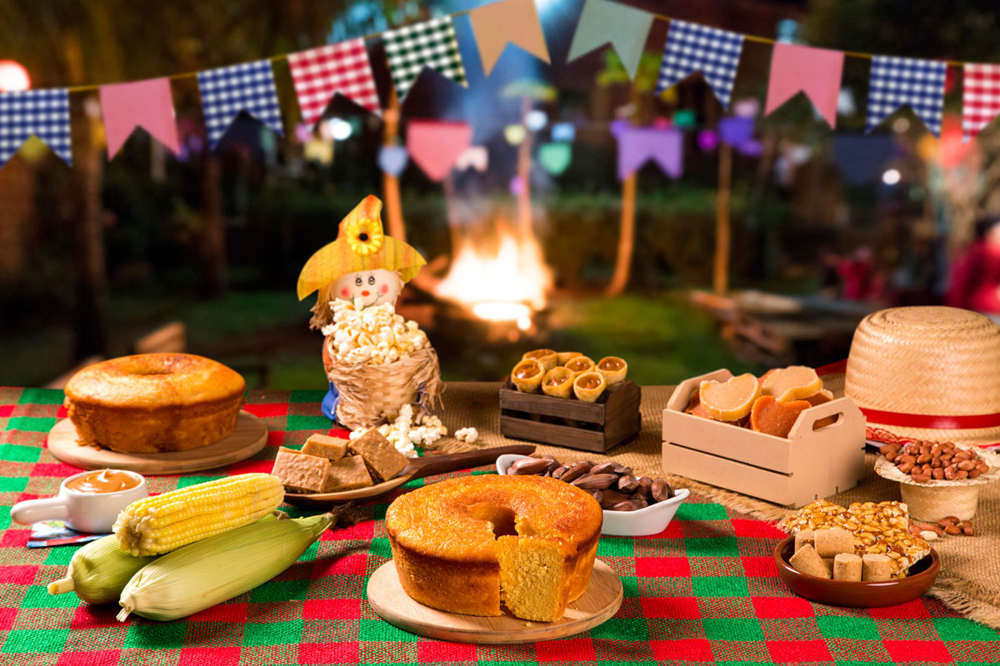

Explorando as diferenças e riquezas culturais desses dois mundos
No campo, a cultura está intimamente ligada à natureza, às tradições familiares e ao ritmo das estações. Festas como a festa junina, a colheita e rituais religiosos têm papel importante. As comunidades rurais valorizam a coletividade, a simplicidade e a manutenção de costumes passados de geração em geração.
Na cidade, a cultura é marcada pela diversidade, modernidade e rapidez. A vida urbana proporciona acesso a cinemas, teatros, museus, shows e eventos multiculturais. As cidades são espaços de inovação, mistura de estilos de vida e maior individualismo.